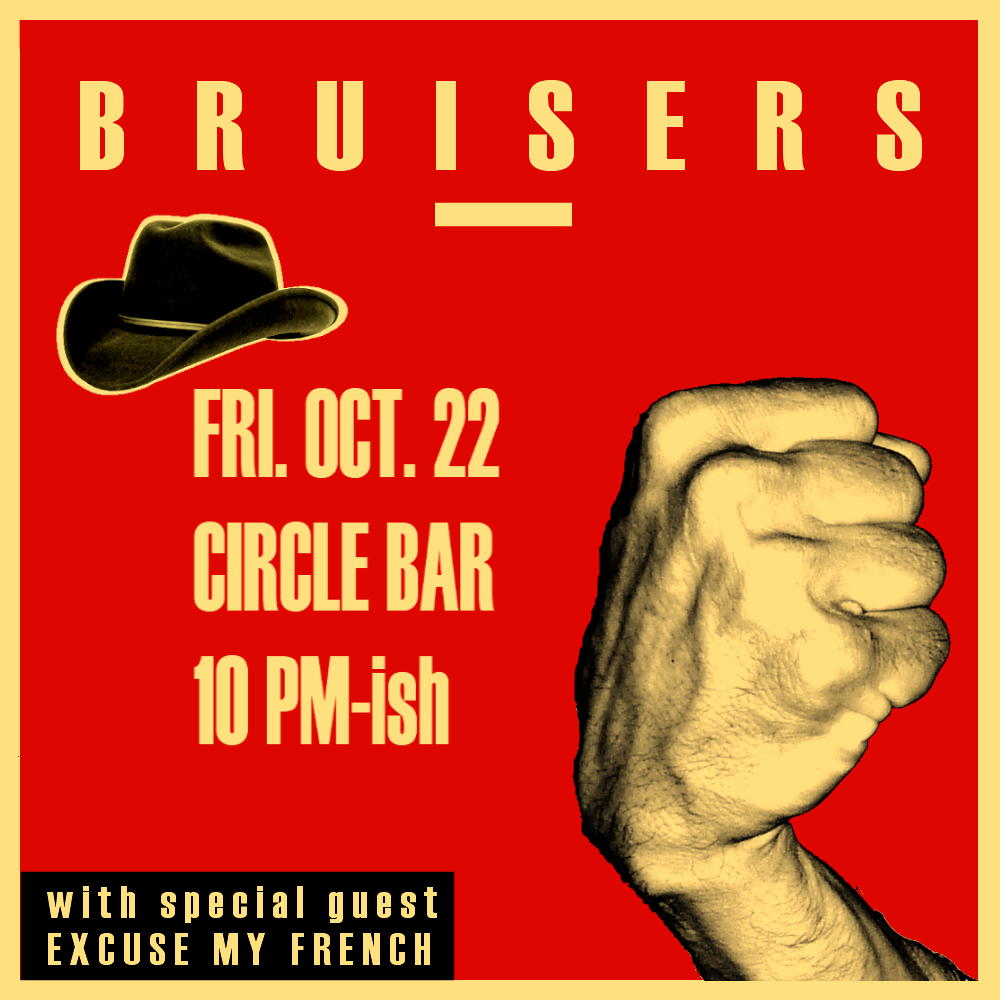
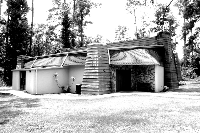
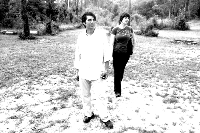

Who are We?
Mary "Cajun Queen" Tuminaro
Former Ville Platte Cotton Festival singing Goodwill Ambassador, now chanteuse and drum-banger extraordinaire. Mary has total recall of every song played on AM radio between 1972 and 1985 and can sing any (or all) of them any time it suits her. Jason
"Fingers of Flame" Goodman
Jason
"Fingers of Flame" Goodman
Madman
guitarist like you've never seen. True, he claims that in the
indeterminate but not too distant future he's heading off to the
temperate Northwest, but we're busily trying to clone him or build a
cyborgean replica (or if those don't work, we'll hide his car keys).David "Big Head" Olivier
From the wilds of Africa to the hills of Virginia, David spent much of his youth living in places where he needed to holler really loudly. Now he hollers loudly for the entertainment of others while simultaneously strumming his baritone guitar. When not otherwise engaged, he posts stuff on his blog, Slimbolala. You should go there. You'll like it.What's the latest?
You can buy the CD right here!
Hey, you want to buy our fabulous CD, "Why Do They Love Me?" Used to be, you had to come to the show in person, but now can buy one (or several) on this very web site right here: you could go to the "Buy stuff" page (where we hope to have more cool stuff for sale in the future) or you could go click on that button over there on the right side, or you could click on this very button right here:Friday, October 22nd, 10 p.m., Circle Bar!
Howdy, folks. It's that time again!
We believe it's worth all the exclamation points! Yay!
Who? Bruisers New Orleans! What? A crazed rock 'n' roll extravaganza!* When? Tomorrow night, Friday, Oct. 22, 10 p.m.-ish! Where? The Circle Bar! With? Special guest, Excuse My French!
* We're not going to call it a Bruiser's-Last-Show, because there have already been several that were rumored as such, but we will say that it is one of our last shows with Jason, and we won't necessarily know for sure which is the last until it's already past. (Jason is a mysterious man with a mysterious plan.) And anyway, in this crazy thing called life, when do we ever know what tomorrow holds? So carpe that diem, and come on down! (Yay!)
Posted: Thursday, October 21, 2010
Our CD release party/show, September 18th, 10 p.m., Circle Bar!
| Where? | The Circle Bar |
| When? | Saturday, 10 p.m. |
| What? | Our CD release party and hell-raising rock show! |
The new album has been rumored for years to exist (well, two years) but has never before been seen or heard. Now at last, it's brought to the light of day (figuratively speaking—it's actually going to be pretty dark at the show), twelve original country-punk gems. 'Twas a balmy summer Sunday in 2008 when three eager young Bruisers drove across the Causeway, past the pines of the North Shore, through the pungent paper mill funk of Bogalusa to Studio in the Country where, under the expert stewardship of Ben Mumphrey, they laid down a dozen-and-change scorching tracks—live, no overdubs, no slicing or splicing, certified autotune-free, now brought to you in all their rough-hewn glory. Why'd it take so long to get released? With Bruisers New Orleans, the question is really, how'd it happen so quickly? (We've still never released that Sun Studios stuff, but we're working on that too.) But we think it's a fine CD, well worth the wait, and we hope you will too.
Posted: Wednesday, September 15, 2010
Our brand spankin' new website!
Which sort of makes it sound like we already had a tattered old website, which is not actually true, because in our ten-plus years of existence, we somehow never got around to it. But you know we've got one now beccause you're looking at it. It's pretty, huh? And though it's just a scrappy little runt of a thing now, we're adding new stuff all the time, so keep coming back.Posted: Wednesday, September 15, 2010